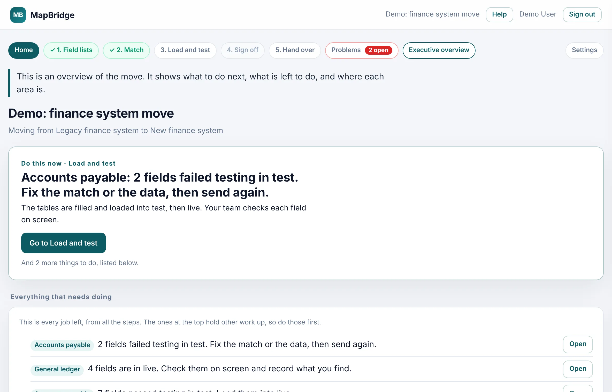
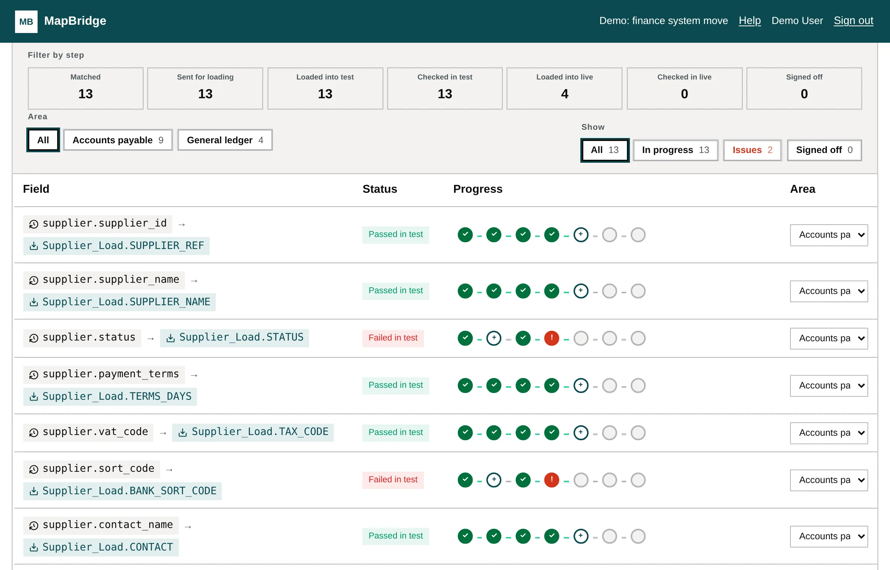

MapBridge
A tool for moving data from an old system to a new one. You match every field, track testing in test and live, and get each area signed off by name.
No sign-up. Works in your web browser, with nothing to install.

How it works
Five steps. Each area of the move goes through them at its own pace.
Field lists
Add the tables and fields from both systems. Use your supplier's mapping spreadsheet, a read-only link to the database, screenshots of the old system, or a file.
Match
Match each old field to where it goes in the new one. MapBridge suggests matches and says why. A person approves each one.
Load and test
Whoever loads the data copies it into a test system, then live. Your team checks each field on screen and records pass or fail, by name.
Sign off
Each area manager signs off their area when the data in live is right. MapBridge warns them if anything is still open.
Hand over
Download the evidence pack, then close the project. Nothing is left behind.
What you need to start
- The names of the tables and fields in both systems. Your new supplier can usually send these.
- Someone in each area to test the data on screen.
- A manager for each area to sign it off.
You do not need to share any records to match fields.
What you get
- A field tracker: where every field is, and who did each step and when.
- A problems log: every failure, and whether it is fixed.
- A one-page summary for senior managers.
- An evidence pack to keep for audit.
- If you have the files, a comparison of record counts and totals (reconciliation).

Your data
Matching uses the names of tables and fields only. MapBridge does not copy, move or change any data. If you compare files, they are read in your web browser and the records are not kept. Read the detail for IT and data protection officers.
What you could save
For a project with 800 fields, we estimate:
An estimate, not a promise. We do not have enough projects with MapBridge yet to promise a number.
See how we worked it out
40 to 140 days across 800 fields is roughly 25 to 80 minutes saved per field. That is the time spent finding the matching field, agreeing code translations, writing the first SQL and chasing sign-off by email and spreadsheet.
Money saved is those days at a £500 day rate: 40 × £500 = £20k, 140 × £500 = £70k. Your day rate and field count will change the answer.
Works today
- Field lists from supplier spreadsheets, databases, screenshots or files, added as tables arrive
- Suggested matches and code translations
- Field tracker for test and live
- Problems log
- Area sign-off and a one-page executive overview
- Evidence pack
- Hiding sensitive fields, such as bank details
- Starter SQL for your supplier
- Optional file comparison
- Ready field lists for school pupil records in England and Wales, so you do not start from a blank page. See the route library
Coming next
- A shared online workspace, with invites and roles
- Matching on what the data contains, not just the field names
- More ready field lists, including lists checked by the supplier
Want help running your move?
We can run the whole project with you, using MapBridge.